Автоматизация Apple Pay в iOS 26
После оплаты через Apple Pay Qalta может сохранить покупку как расход: сумму и магазин подставит автоматически, категорию и счёт можно выбрать при каждой оплате или заранее.
Нужны iOS 26, приложения Qalta и Команды, карты в Wallet.
-
Откройте Настройки → Wallet и Apple Pay. Включите Эфир активности и Сотовые данные.
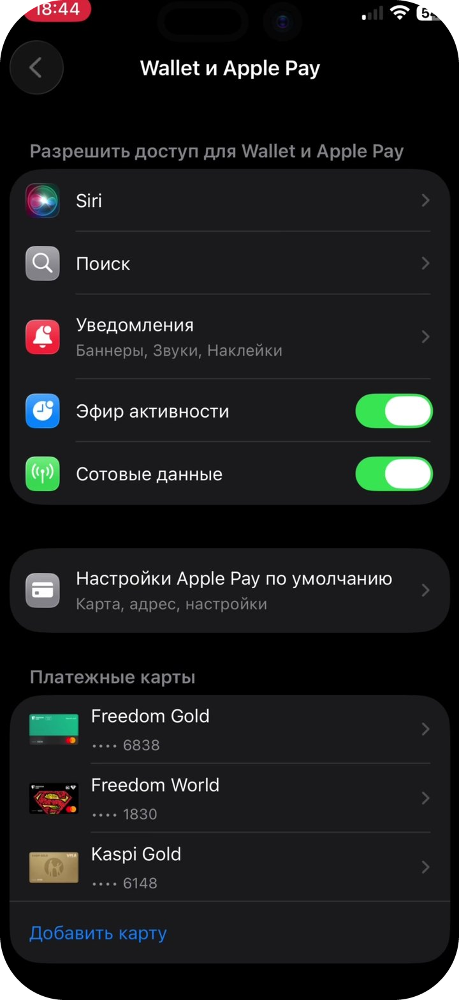
Разрешения для Wallet -
Откройте Команды, перейдите на вкладку Автоматизация и нажмите Новая автоматизация.
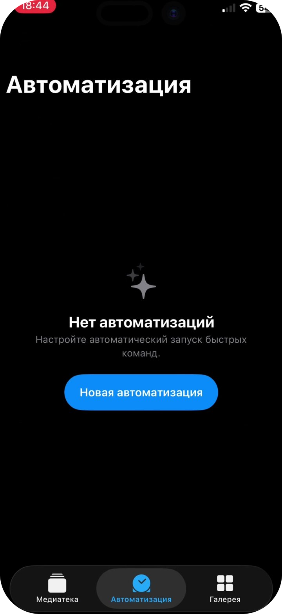
Новая автоматизация -
Выберите триггер Wallet — «Когда я подношу карту Wallet или платежную карту к считывателю».
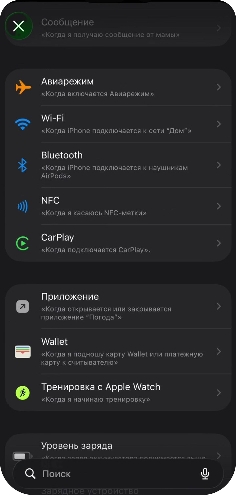
Триггер Wallet -
Отметьте карты, после оплаты которыми нужно записывать расход в Qalta. Нажмите Далее.
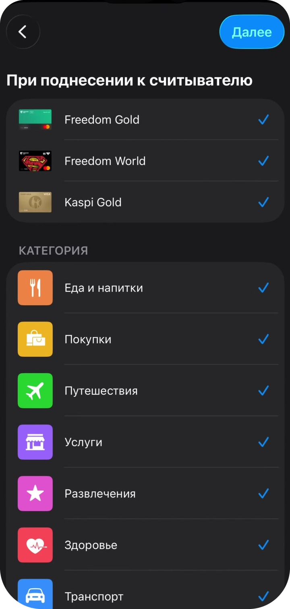
Какие карты отслеживать -
Оставьте нужные категории Wallet (можно все). Выберите Немедленный запуск (не «Запуск после подтверждения»). Нажмите Далее.
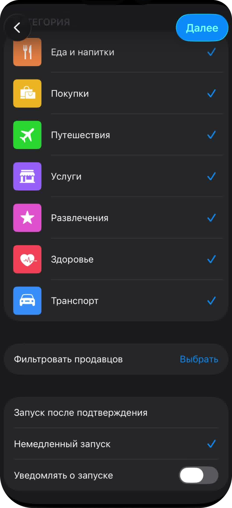
Категории -
На экране с плитками нажмите серую карточку Создать новую быструю команду вверху слева. Не выбирайте готовые команды из списка ниже.
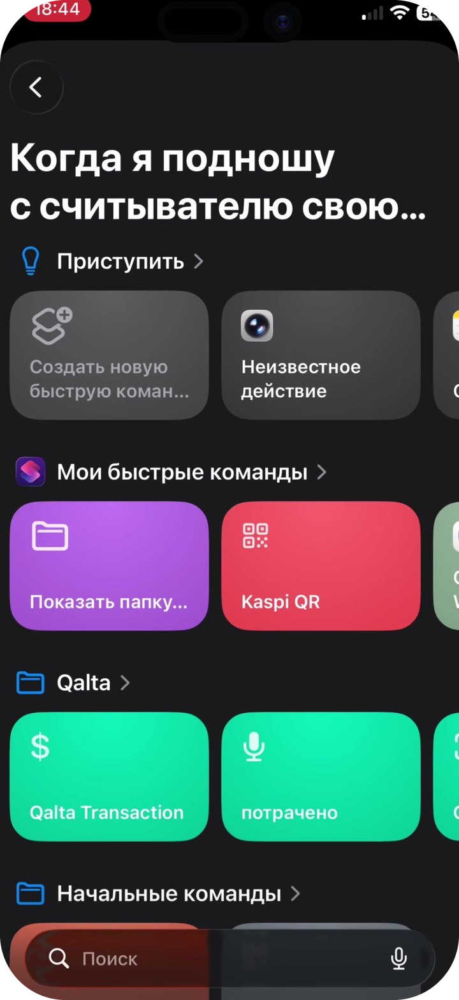
Новая быстрая команда -
Откроется пустой редактор. В поиске действий внизу введите Qalta и нажмите Создать расход из Wallet (не «Создать транзакцию»).
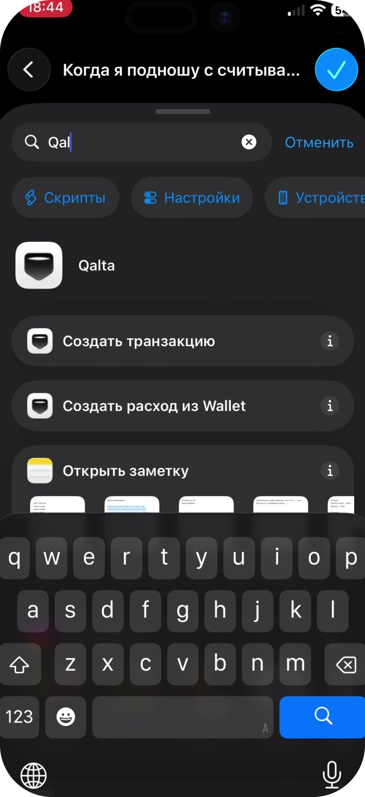
Действие Qalta -
Появятся два блока: «Получать транзакцию…» и действие Qalta. Нажмите серое поле Сумма в действии Qalta — откроется клавиатура. Над ней нажмите Выбрать переменную.
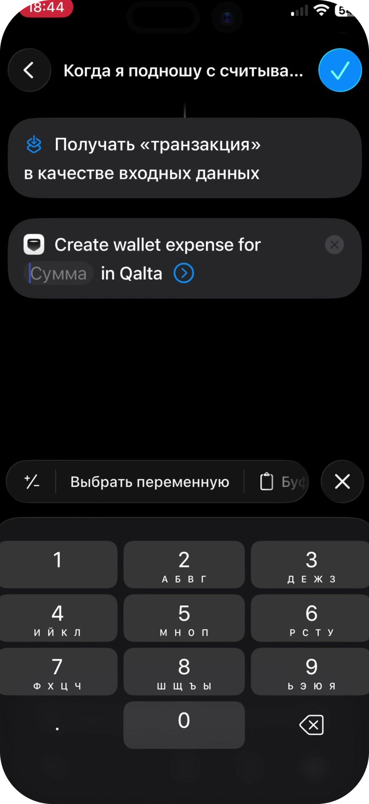
Нажать Сумма, затем Выбрать переменную -
На экране «Выбрать переменную» нажмите синюю метку Входные данные команды — она под блоком «Получать транзакцию…».
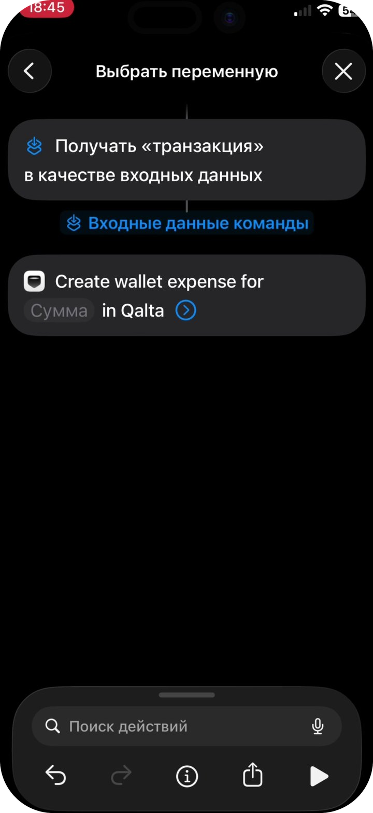
Входные данные команды -
Снова нажмите синюю метку Входные данные команды, которая появилась внутри действия Qalta. В нижней карточке тип должен быть Транзакция. Не оставляйте галочку на пункте «Транзакция» — пролистайте список и нажмите Сумма.
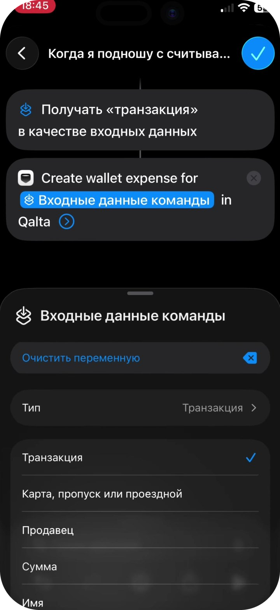
Тип Транзакция → свойство Сумма -
То же для магазина. Нажмите стрелку справа в действии Qalta, чтобы раскрыть поля. Нажмите Магазин → Выбрать переменную → Входные данные команды. Снова нажмите метку, тип Транзакция, в списке выберите Продавец.
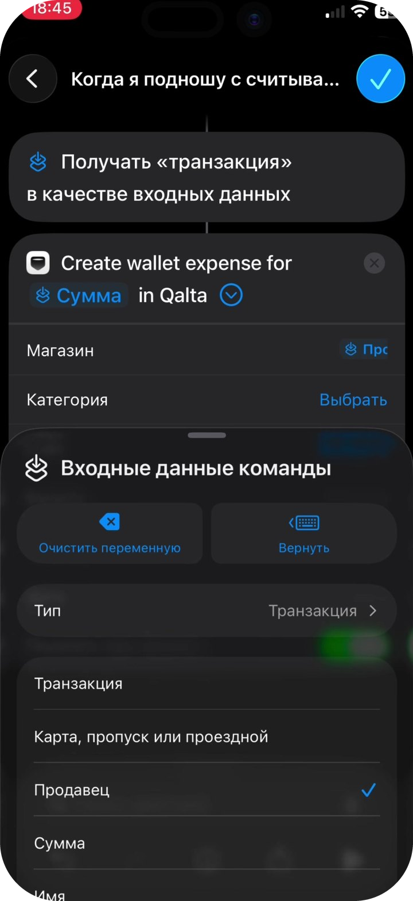
Тип Транзакция → свойство Продавец -
Остальные поля необязательны. Варианты для Категории и Счёта:
- Выбрать — сразу указать конкретную категорию или счёт из Qalta. Если счёт всего один, так и сделайте: выберите его один раз. Спрашивать каждый раз не нужно.
- Спрашивать каждый раз — после оплаты Qalta спросит, куда записать расход. Удобно, если категорий или счетов несколько.
- Можно оставить Выбрать и ничего не указывать — Qalta подставит значения по умолчанию и попробует определить категорию сама.
Валюту, Заметку и Дату можно не заполнять. Включите Показать при запуске, чтобы после оплаты появилось подтверждение. Нажмите синюю галочку сверху.
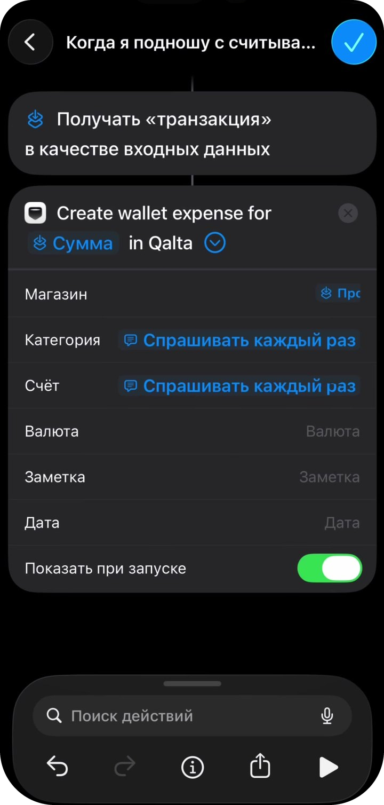
Категория, счёт и подтверждение -
Автоматизация появится во вкладке Автоматизация. После следующей оплаты Apple Pay выбранной картой Qalta предложит сохранить расход.
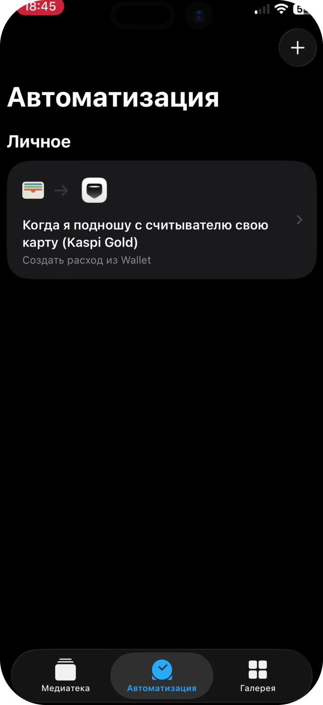
Готово
Видео целиком
Если удобнее смотреть по шагам в записи экрана: